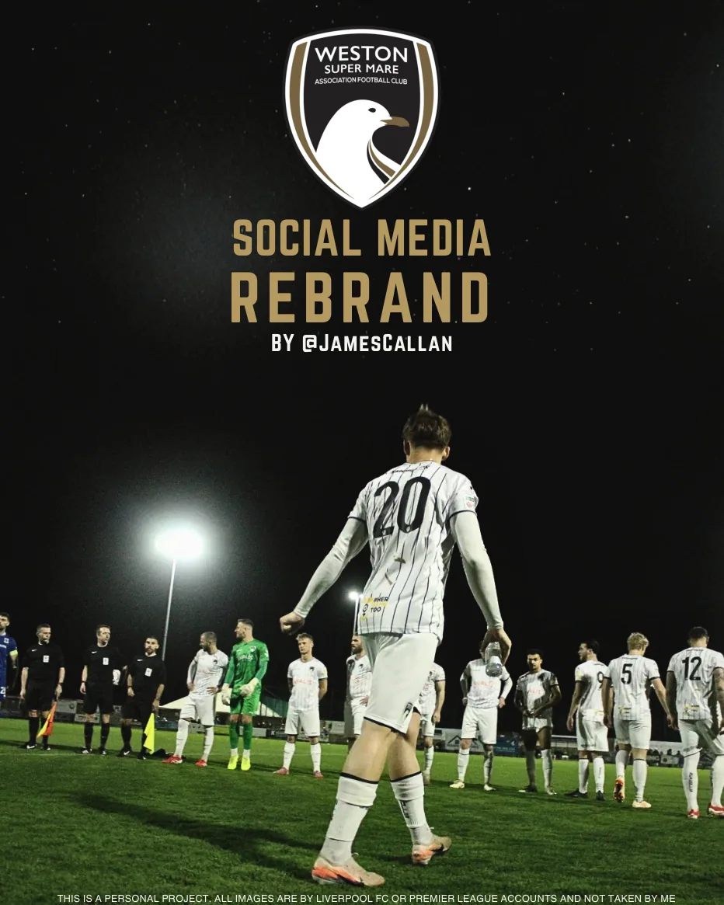
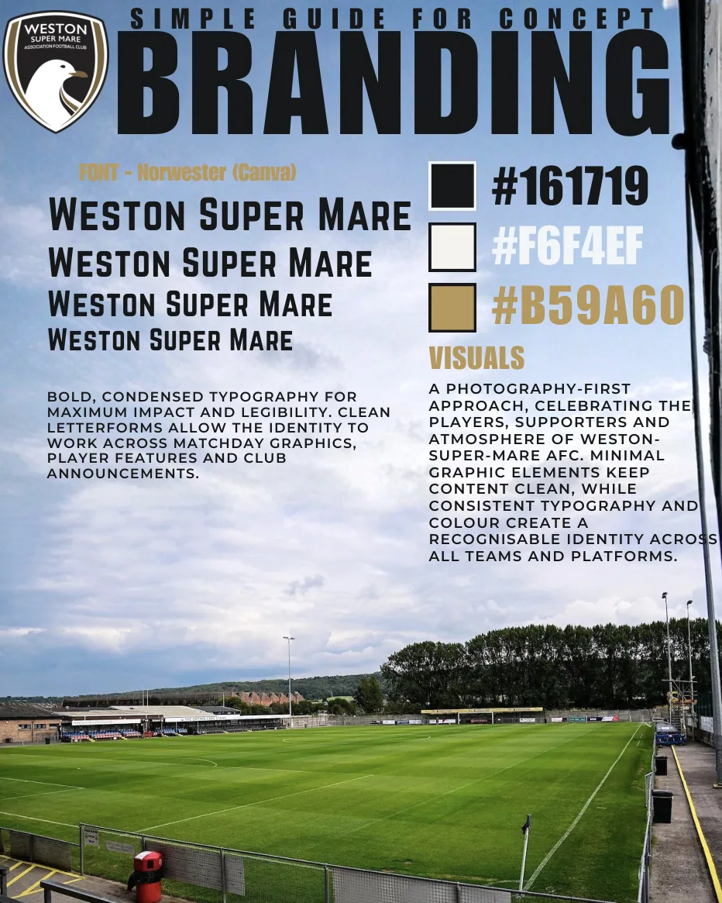
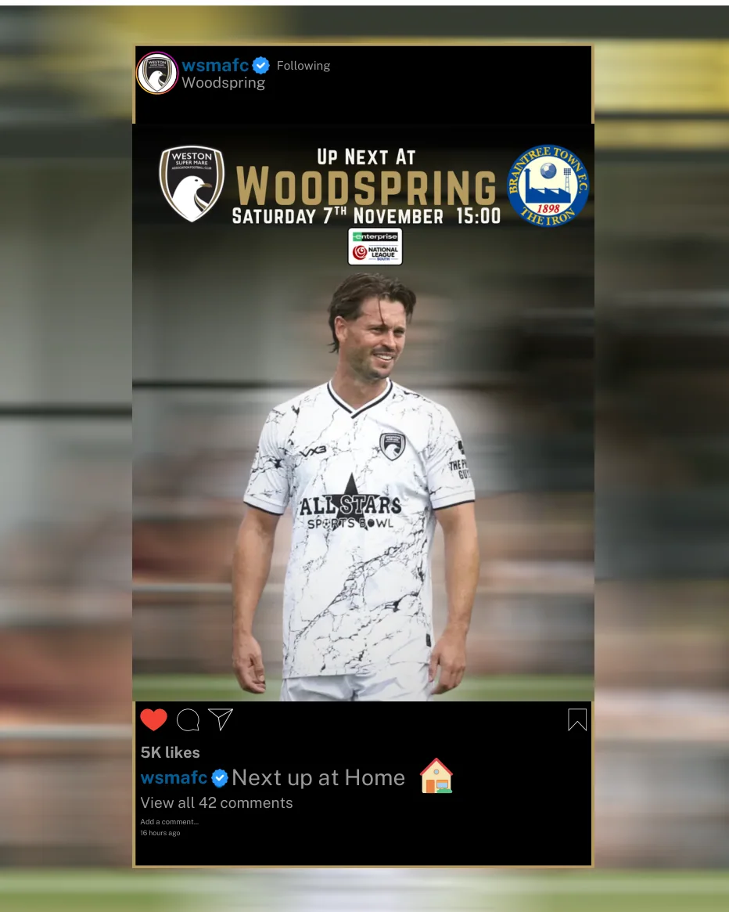
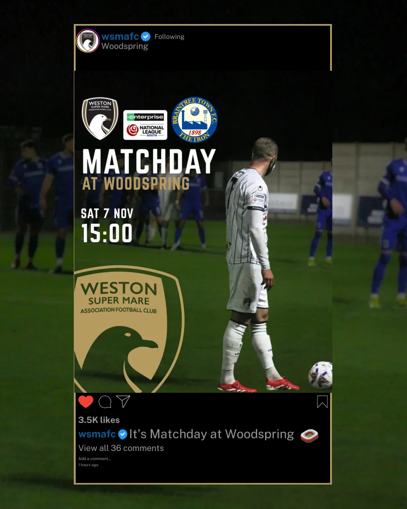
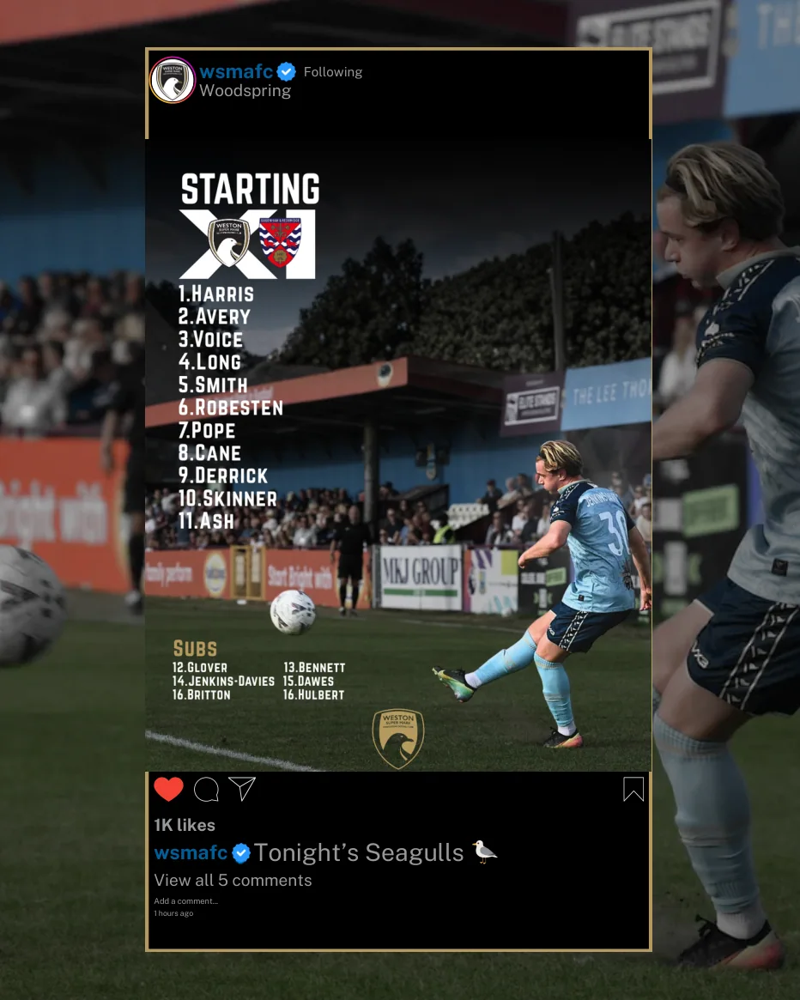
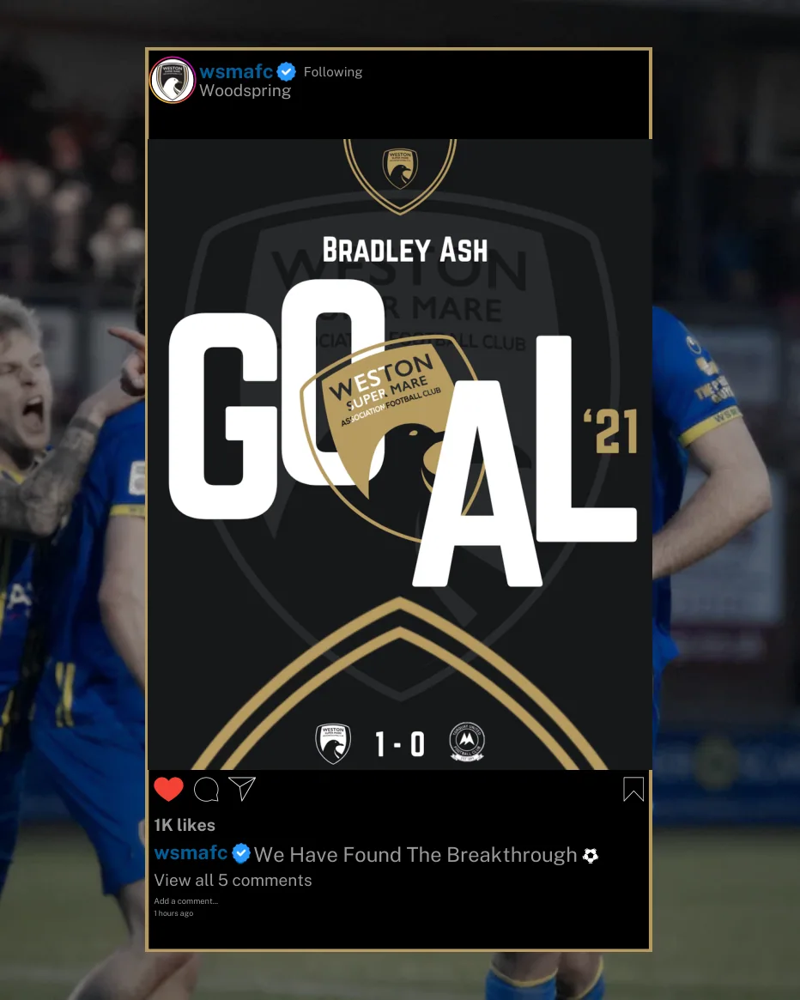
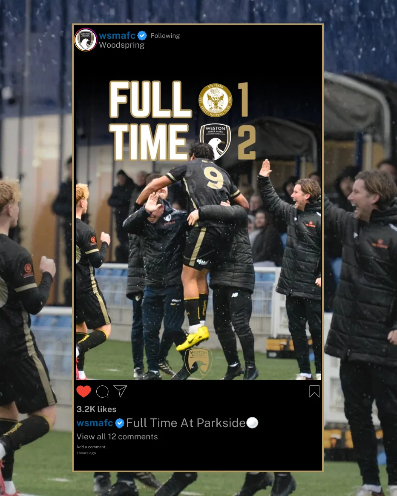
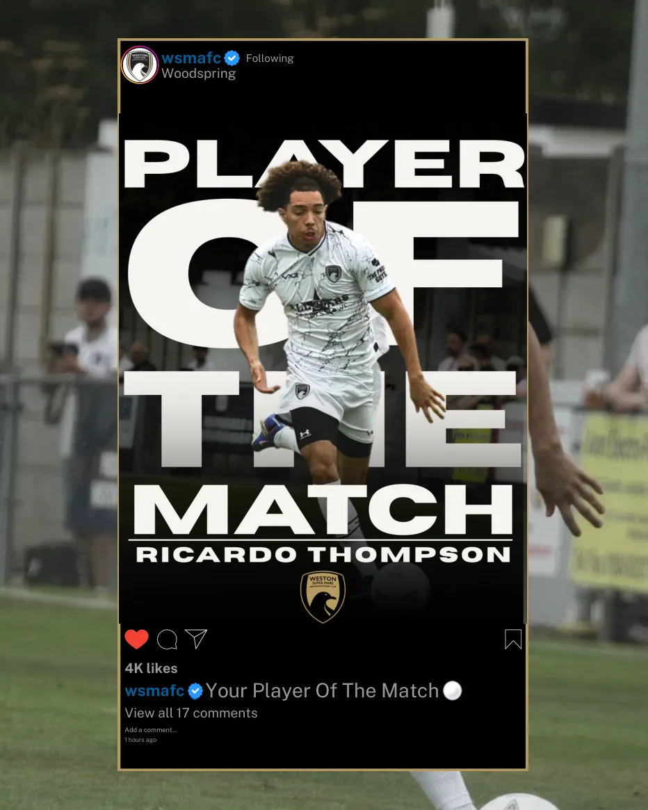
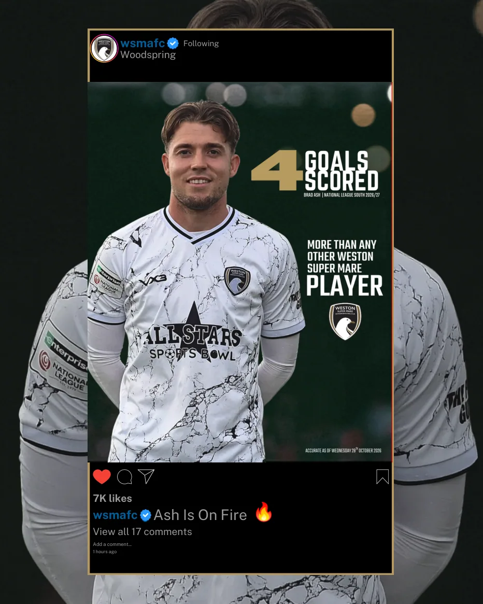

A different look for the Seagulls.
This is a personal social-media rebrand concept for Weston-super-Mare AFC. I wanted a clear, photography-first identity that would work across matchdays, team news, player features and the everyday posts a club produces.
The design uses condensed Norwester typography and a tight palette of charcoal #161719, warm white #F6F4EF and gold #B59A60. The idea is to put players and supporters at the front, then let the type and colours tie everything together.
Independent concept project. These designs and social-feed previews are mock-ups, not evidence of posts published by the club. Photography is credited in my original project presentation to Liverpool FC or Premier League accounts and was not taken by me.

One identity. Every matchday.

Made for the feed.







The follower and engagement numbers visible inside the illustrated social-feed mock-ups are not real performance statistics.
← Back to Branding & Design